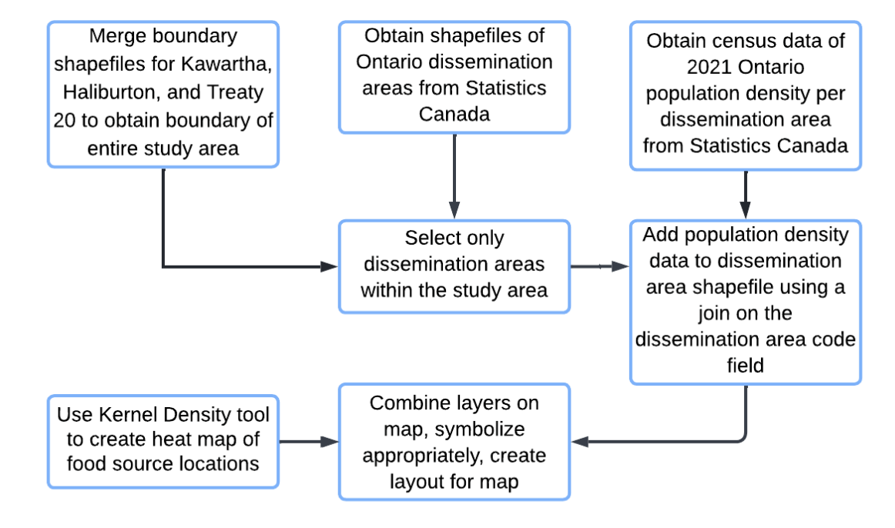
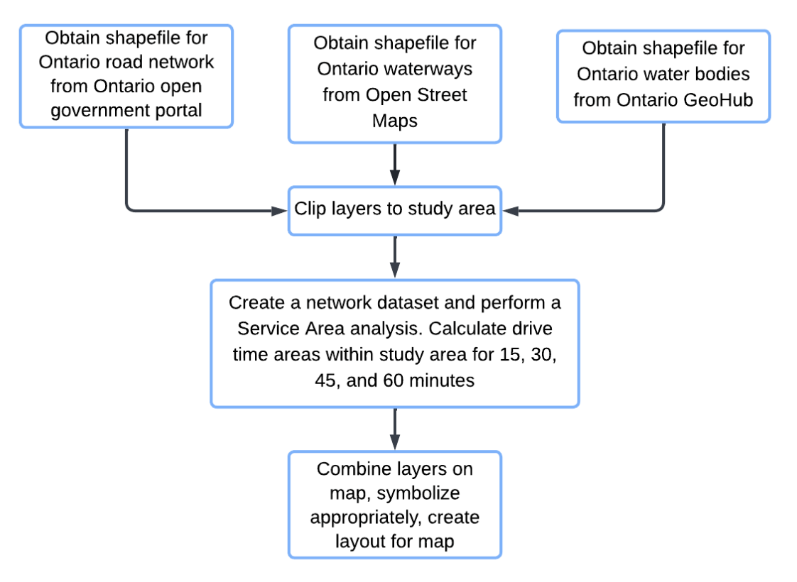

Process Steps
How we created the solution for this project
How we created the solution for this project
Two surveys were created using ArcGIS Survey123 connect (Figure 7.2), for fruit tree and vegetable harvest submissions. Both surveys include necessary information questions for assessment and contact by the client to complete the harvest and donation. These surveys are published publicly and open for submissions, with all records received only available to the survey’s private owner.
To fulfil the client’s request of mapping each submission, both surveys employed the ‘geopoint’ question type to be plotted on the ArcGIS Online web map in Objective 2. This component was hidden to simplify the user interface and prevent accidental changes made by the user. Users can deny location services should they wish, and it will not affect the ability to submit. This section was set as required in the survey construction and uses the ‘pulldata’ calculation to auto-populate the fields with location permission by the user, ensuring the submission can be properly mapped. The contents were sorted into groups and ordered by least to most important for the user to submit; starting with contact information, to harvest specifications, and ending with images and comments.
In the document providing the language to the new website (Objective 4), the client expressed their desire to recruit volunteer gleaners / pickers / harvesters for the program. To address this, a Google Form survey was created.

An ArcGIS Web Map was created to visualise the location of submissions. This allows the client to roughly view the location of produce and coordinate volunteer harvesters and determine the best location for the donation more efficiently. This map will remain private with one owner or group on AGOL, to ensure the security of the data submitted by the landowners.
Each survey required the creation of a ‘layer view’ to plot on the web map, due to the nature of public versus private permissions in AGOL, with region boundaries and the Treaty 20 boundary added at the request of the client. Both survey layers are set to automatically refresh every minute. Appropriate symbology was chosen for accessibility of view, dark base map with contrasting coloured and unique shaped markers.
As this map will be viewed and maintained by a non-GIS professional, which may shift between multiple individuals over time, an AGOL & Survey123 Maintenance Guide was created and provided to the client to safeguard successful long term operation.
An additional web map was created to embed in the new website of Objective 4, to highlight local food source agencies. This map includes the regions and Treaty20 boundaries.
Data relevant to the organization's goal of reducing food poverty was visualized in order to help the client understand the spatial distribution of resources and people who need them. Several static maps were produced that could be shown on the website independent of the ArcGIS Online account. All spatial analyses were performed using ArcGIS Pro 2.8.0.
The locations of the food charities that are associated with the City of Kawartha Lakes and Haliburton County Roundtable for Ending Poverty were geocoded and presented on a map along with the boundaries of the regions they work with, including the Treaty 20 lands. The list of the locations was provided by the client and was geocoded using Geocoder.ca. The boundary shapefiles for the City of Kawartha Lakes and Haliburton County were taken from the Government of Ontario data catalogue, and the boundaries for the Treaty 20 lands were obtained from a map found on the website of the Niigaaning G'Chi Mnissing Trust and then manually georeferenced.
The distribution of the food charities was analysed for areas with clusters, and compared to the population density of the region. This visualizes the amount of resources available per capita for residents. The data for the population density per dissemination area was obtained from the 2021 Canadian census results.
The time it takes to drive to the nearest food charity was calculated using a service area network analysis, which shows how accessible the food charities are by road. The shapefile for the roads and their speed limits were obtained from the Government of Ontario data open portal.
A brand new website was created and hosted on github. Editing of the website was done through Visual Studio Code. The “Agency” template from Start Bootstrap was chosen to help build the website due to its simplicity, ease to navigate and colour theme that is similar to that of the Roundtable website . The language for the website was provided by our client after getting approval from all of their partners, and only underwent minor editing by us to fix grammatical errors.
The contents were then modified and divided into different pages and components that make sense from a web user perspective to create a seamless browsing experience. Certain information such as tree species details, recipes and poverty data was pulled from the old 2021 project website as requested by the client.
The images for the website were carefully chosen to reflect the theme of the project, and all images are free to use with the Common Creative licences. Images were modified (for example: adding shade gradient effect, resizing, cropping, etc.) using Adobe Photoshop CS6.